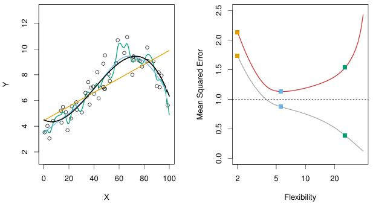
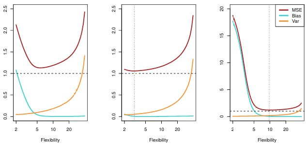
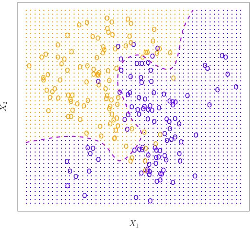
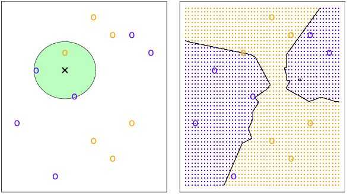

How to Assess Model Accuracy
In statistical learning, there is no single method that dominates all others over all possible data sets. One method might be the best for a particular data set, but some other method may work better on a different one. Therefore, we need a way to evaluate the methods we use to produce the best result.
Evaluating a Regression Model
We need to quantify to what extent does the model’s predicted response for a given observation is close to the true response.
Mean Squared Error and Overfitting
In a regression setting, one method is the mean squared method (MSE), given by: \[ \text{MSE} = \frac{1}{n} \sum_{i=1}^n \left( y_i - \hat{f}(x_i) \right)^2 \] where \(\hat{f}(x_i)\) is the prediction that \(\hat{f}\) gives for the \(i\)th observation. The lower the MSE, the more accurate the model will be. This makes sense because the bigger the difference between the predicted and actual response (we square the difference to eliminate the negative values then we add everything), the more the model deviates away from the true response.
The MSE is computed using the existing training data that was used to fit the model. To evaluate the MSE, we want to use an unseen variable that has not been used by the model for training. For example:
- Algorithm developed to predict a stock price based on data from the past 6 months.
- We do not really care how well the model predicts last week’s stock price (training data)
- We care how the model predicts tomorrow’s stock price (test data)
- Algorithm developed to predict diabetes risk based on previous patient’s clinical measurements
- We are not concerned how the model predicts diabetes risk for patients used to train the model (training data)
- We care about how the method accurately predicts diabetes risk for future patients (test data)
If there are no test observations to evaluate the model, an option might be to just use the training data to minimize the training MSE, but this does not guarantee the lowest test MSE. To grasp the concept, see figure:

- Left panel:
- True \(f\) is black
- Orange linear regression is inflexible, next is blue smoothing spline, and the most flexible is green smoothing spline
- Most flexible green spline is following the training data too closely, deviating away from the true \(f\)
- Right panel:
- Gray curve is training MSE as a function of flexibility
- Orange linear regression (less flexible) has highest training MSE (bad)
- Blue smoothing spline (middle flexibility) has middle MSE (good)
- Green smoothing spline (most flexible) has lowest training MSE (best)
- Red curve is test MSE as a function of flexibility
- Orange linear regression still has highest MSE (bad)
- Blue smoothing spline has the lowest MSE (best)
- Green smoothing spline, although the most flexible, has increased MSE
- Gray curve is training MSE as a function of flexibility
As model flexibility increases, the training MSE will decrease, but the test MSE may not. If this is the case, the statistical method is overfitting the data.
Overfitting happens when the flexible model is working too hard to find patterns in our training data, not knowing that the patterns can be caused by random chance/error, the \(\epsilon\). When a less flexible model would have yielded a smaller test MSE, then we are definitely overfitting.
The Bias-Variance Trade-off
The test MSE is the sum of three fundamental quantities:
- Variance of \(\hat{f}(x_{0})\)
- Squared bias of \(\hat{f}(x_{0})\)
- Variance of the error terms \(\epsilon\)
In order to minimize the expected test error, we need to select a statistical learning method that simultaneously achieves low variance and low bias.
The Variance of \(\hat{f}(x_{0})\)
- Different training sets will result in a different \(\hat{f}\)
- Variance refers to the amount by which \(\hat{f}\) would change if we estimated it using a different training data set
- High variance - small changes in training data set can result in large changes in \(\hat{f}\)
- In general, more flexible statistical methods have higher variance because it follows observations more closely
- Low variance - small changes in training data set do not change \(\hat{f}\) that much
- In general, less flexible methods (least squares linear regression) have low variance
- High variance - small changes in training data set can result in large changes in \(\hat{f}\)
The Bias of \(\hat{f}(x_{0})\)
- Bias refers to the error that is introduced by approximating a real-life problem by a simple model
- High bias - when linear regression is used to explain a non-linear relationship between \(Y\) and \(X_{1}, X_{2}, \ldots, X_{p}\)
- since true \(f\) is non-linear, it does not matter how many training data set we are given; linear regression will not produce an accurate estimate
- High bias - when linear regression is used to explain a non-linear relationship between \(Y\) and \(X_{1}, X_{2}, \ldots, X_{p}\)
As we use more flexible methods, the variance will increase and the bias will decrease. When we increase flexibility, bias initially decrease faster than the increase in variance, which decreases our test MSE (what we want). But if we increase the flexibility too much, bias will not decrease much, and variance will increase a lot (not what we want).

- Blue is bias, Orange is variance, dashed line is irreducible error \(\epsilon\), and Red is MSE (the sum of the three lines) which we aim to minimize
- In the three figures, as you increase model flexibility, bias and variance change at different rates, resulting in a different optimal MSE
- Left panel:
- As model flexibility increase, bias sharply declines, with only a slight increase in variance (good)
- When flexibility increases more, variance sharply goes up, overfitting the data (bad)
- We want to stop at flexibility is 5
- Middle panel:
- As model flexibility increases, there’s really not much decrease in bias, but variance goes up sharply (bad)
- In this data set, we want model flexibility at the lowest (true \(\hat{f}\) seems linear)
- Right panel:
- As model flexibility increase, bias sharply declines (good)
- When flexibility increases more, variance does not increase much (good)
- In this data set, true \(\hat{f}\) is non-linear, so we can increase the model flexibility
- Left panel:
The bias-variance trade-off challenge lies in finding the method flexibility for which both the variance and bias are the lowest, to minimize MSE.
Evaluating a Classification Model
The concepts of regression MSE discussed above can be transferred over to the classification setting with only minor modifications.
Training error rate
The error rate is the proportion of mistakes that are made if we apply our estimate \(\hat{f}\) to the training observations, given by \[ \frac{1}{n} \sum_{i=1}^{n} I(y_i \neq \hat{y}_i) \] where \(\hat{y}_i\) is the predicted class label for the ith observation using \(\hat{f}\), and \(I(y_i \neq \hat{y}_i)\) is an indicator variable that equals 1 if \(y_i \neq \hat{y}_i\) and zero if \(y_i = \hat{y}_i\).
The equation above is referred to the training error rate since it is computed based on the training data. But like the regression setting, we are more interested in the test error rate. A good classifier model minimizes the test error rate.
The Bayes Classifier
The Bayes classifier assigns each observation to the most likely class given its predictor values, by assigning a test observation with predictor vector \(x_0\) to the class \(j\) for which \[ Pr(Y = j \mid X = x_0) \] is largest. This Bayes classifier equation describes the probability that \(Y = j\), given the observed predictor vector \(x_0\). Put simply, if \(Pr(Y = j \mid X = x_0)\) > 0.5, then the equation predicts class one, and class two otherwise. For example, see figure:

- Simulated data in 2D consisting of predictors \(X_1\) and \(X_2\)
- For each value of \(X_1\) and \(X_2\), there is probability of response being blue or orange
- Orange region reflects set of points for which \(\Pr(Y = \text{orange} \mid X)\) is greater than 50% (Blue if less than 50%)
- Purple dashed line is Bayes decision boundary, where probability is exactly 50%
The Bayes classifier serves as a gold standard as a classification method, but in reality we do not know the conditional distribution of \(Y\) given \(X\).
K-Nearest Neighbors
K-Nearest Neighbor is a method to classify a given observation to the class with highest estimated probability. Given \(K\) (positive integer) and test observation \(x_0\), the KNN identifies the \(K\) points in the training data that are closest to \(x_0\), represented by \(N_0\), then it estimates the conditional probability for class \(j\) as the fraction of points in \(N_0\) whose response values equal \(j\): \[ \Pr(Y = j \mid X = x_0) = \frac{1}{K} \sum_{i \in N_0} I(y_i = j) \] KNN classifies the test observation \(x_0\) to the class with the largest probability. As an example, see figure below:

- Left:
- Plotted training data set with six blue and six orange observations
- What is the classification of the black cross?
- If \(K\) = 3, then KNN will identify three observations that are closest to the cross, given by the circle
- Circle contains two blue points (2/3), and 1 orange point (1/3)
- KNN will predict that black cross belongs to the blue class
- Right:
- We applied KNN classifier method with \(K\) = 3 at all possible values for \(X_1\) and \(X_2\), and marked the decision boundary